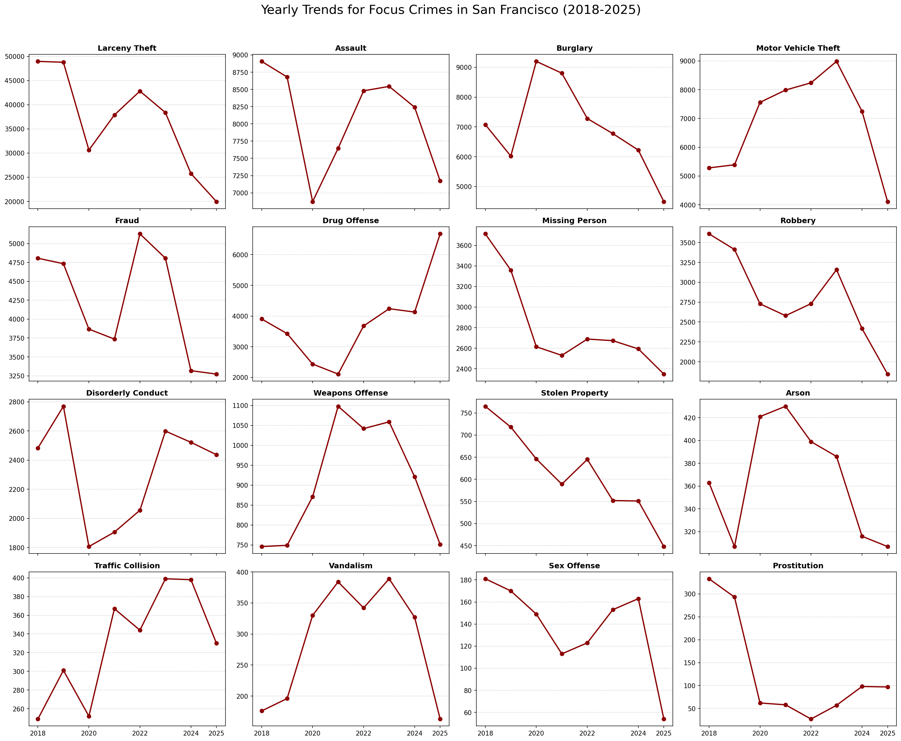
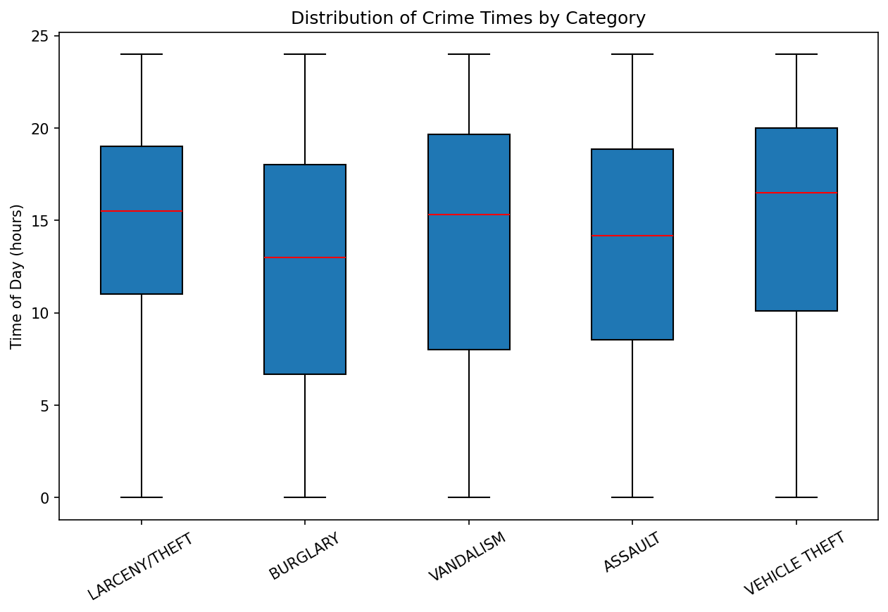
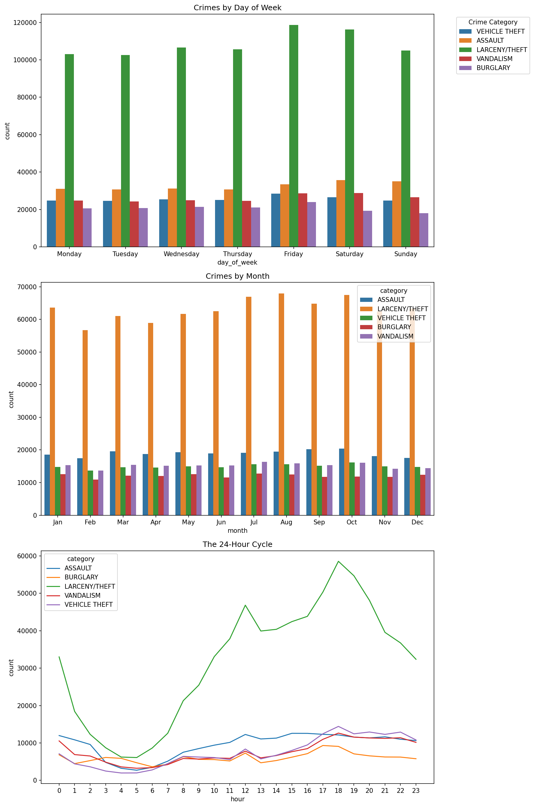

📈 Yearly Crime Trends
This visualization shows how selected crime categories changed over time from 2018 to 2025.
A colorful mini data visualization portfolio exploring patterns in San Francisco crime data through static charts, interactive graphics, and maps.
This project brings together multiple visualizations created from San Francisco crime data. The site includes static figures for quick trend summaries, an interactive chart for deeper exploration, and a map for spatial patterns across the city.

This visualization shows how selected crime categories changed over time from 2018 to 2025.

These box plots summarize the distribution of crime-related patterns and highlight variation across categories.
Explore district-level assault patterns in an interactive visualization. Open it to hover, zoom, and inspect the chart in more detail.
Open ChartThis Folium map shows the geography of prostitution-related incidents in San Francisco. Open the map to pan, zoom, and explore hotspots.
Open Map
A second static figure offering another view of yearly crime patterns across categories.